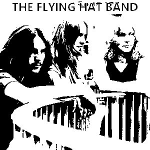

 Whenever I write about a band or album I like here, I always try and stay away from well-known acts, and I think this week's band is not at all know.
I first found-out about "The Flying Hat Band" in a way that I'm sure will get me 40 years of hard labour in jail; I was downloading bootleg early live Judas Priest shows off the Web, ah Christ, I've done it now, but anyway, one of the albums I ILLEGALLY downloaded was an album dubbed as "The Flying Hat Band: Complete Works".
The album is only made up of six tracks, with a total runtime of 27:52. From what I can find-out about the band is that they formed around 1971 and lasted until 1974.
According to The Priest's Boot ("The very best of Judas Priest bootlegs"), TFHB was the last band where Glenn Tipton played before joining Judas Priest. The band would eventually landed a record deal with Vertigo Records, but their first album (that was recorded sometime in 1970-71, according to bassist Andy Wheeler) was shelved by the company after they believed it to be too similar with labelmates Black Sabbath. The webmaster of The Priest's Boot comments on this by saying that they "highly doubt that unless the unreleased material is extremely heavy".
After this the band would continue touring with a few lineup changes along the way (Tipton would be the only member to stay all the way), but as time when on, so did the money. When Tipton was offered to join Judas Priest in April 1974, he decided to accept the offer considering that it can't be any worse than the current state of The Flying Hat Band.
And as they say, the rest is history.
I am going to link to The Priest's Boot, for one I want to give credit for the info I'm presenting, and two the page has some good demos that are hard to find - also I don't think that Vertigo cares about a band they never really helped, and I also don't think Glenn Tipton or Judas Priest are they type of people to go out of their way to sue someone for linking to some ropey old demos.
The Priest's Boot (see the bottom for album): http://nuppiz.webs.com/downloads.htm
Here is what I guess was the official website: https://surl.neocities.org/A_qtmAi8.htm